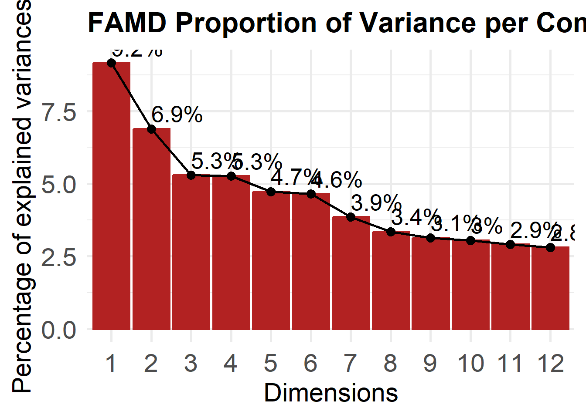
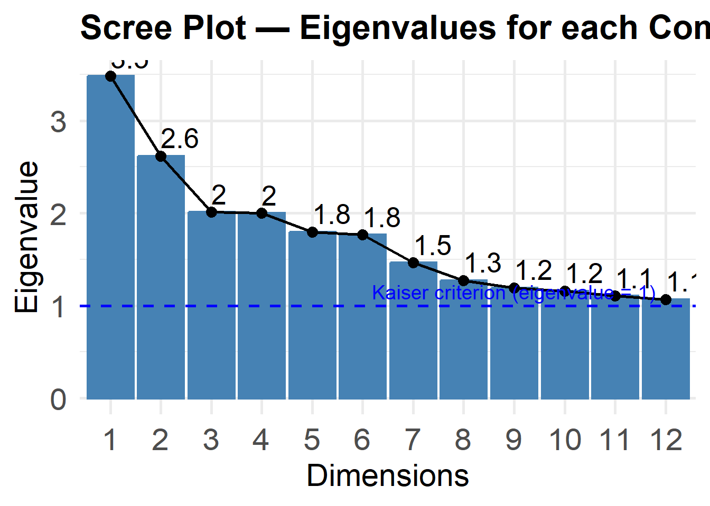
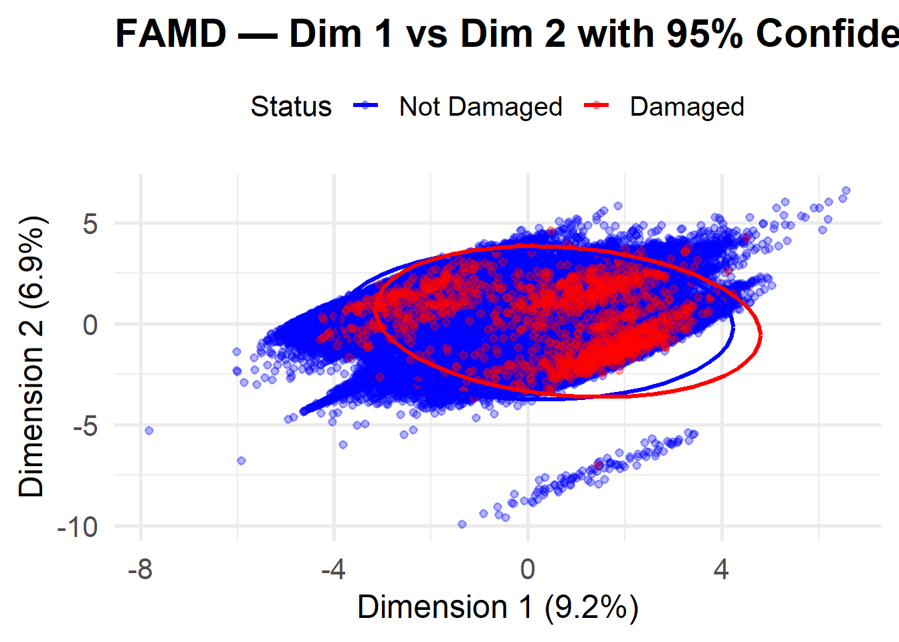

library(FactoMineR)
library(factoextra)Loading required package: ggplot2Welcome to factoextra!Want to learn more? See two factoextra-related books at https://www.datanovia.com/en/product/practical-guide-to-principal-component-methods-in-r/library(randomForest)randomForest 4.7-1.2Type rfNews() to see new features/changes/bug fixes.
Attaching package: 'randomForest'The following object is masked from 'package:ggplot2':
marginlibrary(caret)Loading required package: latticelibrary(e1071)
Attaching package: 'e1071'The following object is masked from 'package:ggplot2':
elementlibrary(tidyverse)── Attaching core tidyverse packages ──────────────────────── tidyverse 2.0.0 ──
✔ dplyr 1.2.0 ✔ readr 2.1.6
✔ forcats 1.0.1 ✔ stringr 1.6.0
✔ lubridate 1.9.4 ✔ tibble 3.3.1
✔ purrr 1.2.1 ✔ tidyr 1.3.2── Conflicts ────────────────────────────────────────── tidyverse_conflicts() ──
✖ dplyr::combine() masks randomForest::combine()
✖ e1071::element() masks ggplot2::element()
✖ dplyr::filter() masks stats::filter()
✖ dplyr::lag() masks stats::lag()
✖ purrr::lift() masks caret::lift()
✖ randomForest::margin() masks ggplot2::margin()
ℹ Use the conflicted package (<http://conflicted.r-lib.org/>) to force all conflicts to become errorslibrary(pROC)Type 'citation("pROC")' for a citation.
Attaching package: 'pROC'
The following objects are masked from 'package:stats':
cov, smooth, varmodel_data <- read.csv("Data/model_data_Classifier1.csv")
head(model_data) Avg_Slope K_final MeanSlope30m PercentForestedLand MEAN PM_rank
1 4.954450 0.49 3.082571 0 1.889603 4
2 3.684948 0.49 2.312988 0 1.868395 4
3 2.748165 0.49 1.622722 0 1.846787 4
4 2.862315 0.49 1.907945 0 1.824649 4
5 2.361402 0.49 2.805646 0 1.803920 4
6 5.839251 0.17 3.445237 0 2.503557 4
Culvert_Count Surface StreamCros HYDROGROUP PARENT Mean_TopoConvergence_50m
1 0 Unpaved No D GL 6.855893
2 0 Unpaved No D GL 7.832412
3 0 Unpaved No D GL 7.630836
4 0 Unpaved No D GL 7.938209
5 1 Unpaved No D GL 7.184344
6 0 Unpaved No C GL 7.195348
damaged
1 No
2 No
3 No
4 No
5 No
6 Nofamd_data <- model_data %>% select(-damaged)
# Run FAMD
famd_result <- FAMD(famd_data, ncp = 12, graph = FALSE)
# Scree plot ------------------------------------------------------------
# proportion of variance plot
fviz_screeplot(famd_result, ncp = 12,
addlabels = TRUE,
barfill = "firebrick", barcolor = "firebrick",
linecolor = "black",
main = "FAMD Proportion of Variance per Component Plot") +
theme_minimal(base_size = 20) +
theme(
plot.title = element_text(size = 24, face = "bold"),
axis.title = element_text(size = 22),
axis.text = element_text(size = 22)
)
# scree plot
fviz_screeplot(famd_result, ncp = 12,
choice = "eigenvalue",
addlabels = TRUE,
linecolor = "black",
main = "Scree Plot — Eigenvalues for each Component") +
geom_hline(yintercept = 1, linetype = "dashed", color = "blue", linewidth = 1) +
annotate("text", x = 9, y = 1.15, label = "Kaiser criterion (eigenvalue = 1)",
color = "blue", size = 5) +
theme_minimal(base_size = 20) +
theme(
plot.title = element_text(size = 24, face = "bold"),
axis.title = element_text(size = 22),
axis.text = element_text(size = 22)
)
eig<- get_eigenvalue(famd_result)
# Print variable contributions to first 2 components
var_contrib <- famd_result$var$contrib
print(round(var_contrib[, 1:2], 2)) Dim.1 Dim.2
Avg_Slope 7.37 5.20
K_final 9.62 2.68
MeanSlope30m 8.22 10.45
PercentForestedLand 9.07 6.43
MEAN 4.46 0.47
PM_rank 11.55 16.67
Culvert_Count 0.28 0.18
Mean_TopoConvergence_50m 5.77 8.59
Surface 7.95 1.01
StreamCros 0.02 0.57
HYDROGROUP 15.66 21.75
PARENT 20.02 26.00# Extract individual coordinates from FAMD
ind_coords <- as.data.frame(famd_result$ind$coord[, 1:3])
names(ind_coords) <- c("Dim1", "Dim2")
ind_coords$damaged <- model_data$damaged
sample_idx <- c(
which(ind_coords$damaged == "No"),
which(ind_coords$damaged == "Yes")
)
plot_data <- ind_coords[sample_idx, ]
plot_data$damaged <- factor(plot_data$damaged, levels = c("No", "Yes"))
# plot first two dimensions with ellipses
ggplot(plot_data, aes(x = Dim1, y = Dim2, color = damaged)) +
geom_point(alpha = 0.3, size = 1.5) +
stat_ellipse(level = 0.95, linewidth = 1.2) +
scale_color_manual(values = c("No" = "blue", "Yes" = "red"),
labels = c("Not Damaged", "Damaged")) +
labs(title = "FAMD — Dim 1 vs Dim 2 with 95% Confidence Ellipses",
x = paste0("Dimension 1 (", round(eig[1, 2], 1), "%)"),
y = paste0("Dimension 2 (", round(eig[2, 2], 1), "%)"),
color = "Status") +
theme_minimal(base_size = 20) +
theme(
plot.title = element_text(size = 22, face = "bold"),
axis.title = element_text(size = 18),
axis.text = element_text(size = 16),
legend.title = element_text(size = 16),
legend.text = element_text(size = 15),
legend.position = "top"
)
# Numeric variable loadings (correlation with each dimension)
round(famd_result$quanti.var$coord[, 1:2], 3) Dim.1 Dim.2
Avg_Slope 0.507 0.369
K_final 0.579 -0.265
MeanSlope30m 0.535 0.523
PercentForestedLand 0.562 0.410
MEAN 0.394 0.111
PM_rank -0.634 0.661
Culvert_Count 0.098 -0.069
Mean_TopoConvergence_50m -0.448 -0.474# Categorical variable loadings (coordinates per category level)
round(famd_result$quali.var$coord[, 1:2], 3) Dim.1 Dim.2
Paved -1.366 -0.370
Unknown -0.156 0.299
Unpaved 0.731 0.180
No 0.015 0.058
Yes -0.173 -0.674
A -2.480 1.270
A/D -3.167 -0.026
B 0.408 1.332
B/D -2.361 -0.612
C 0.818 0.800
C/D 0.783 -1.530
D 0.845 -1.275
not rated -1.686 -1.023
Unknown -3.771 -3.446
water 1.395 -7.333
A -2.644 0.367
DT 1.389 -1.310
DT/GT 1.061 -0.820
DT/GT/GF 2.162 1.689
DT/O 0.530 -1.550
GF -2.804 1.079
GF/GL -1.757 -1.262
GL -0.547 -1.935
GL/GF 1.174 0.914
GT 0.616 1.239
GT/DT 0.440 1.184
GT/GF -0.371 2.407
GT/GT_R 1.473 2.443
M -1.948 -2.001
M/GF/GL -1.448 0.264
O -1.741 -1.720
O/A -3.161 0.243
Unknown -3.771 -3.446
W 1.395 -7.333